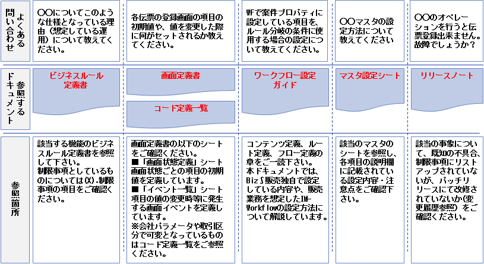

カスタマーサポートを活用する¶
はじめに¶
ここでは、「カスタマーサポート」をご利用いただく際の確認観点、参考資料、課題の早期解決を目的としたお願い事項等を記載します。
カスタマーサポートサイトご利用時のお願い¶
- お問い合わせ前に参照するドキュメント をご参照いただき、必要な情報をキーワードで検索しご確認ください。
- お問い合わせの際は、 お問い合わせ時の注意観点、連携いただきたい情報 をご参照いただき、製品のバージョン情報や操作時のログなど情報提供にご協力をお願い致します。
- 製品の改善目的のためにお問い合わせの背景、要件等を確認させていただく場合がございます。その際は、ご協力をお願い致します。
お問い合わせ前に参照するドキュメント¶
カスタマーサポートサイトへのBiz∫販売に関する問い合わせにおいて、以下のドキュメントに記載されている仕様に関する問い合わせが多くあります。
早期解決を図るため、問い合わせを行う前に以下のドキュメントをご参照ください。
| No. | ドキュメント | 説明 | 所在 |
|---|---|---|---|
| 1 | ビジネスルール定義書 | 基本的な用語や仕様、事例をまとめたドキュメントです。 | 01_DesignDocument/第1章_システム基本事項/1.5_ビジネスルール定義書 |
| 2 | 画面定義書 | 各画面の画面レイアウト、画面項目、イベント、状態定義について記述したドキュメントです。 | 01_DesignDocument/第3章_業務個別設計/3.3_画面定義書 |
| 3 | ワークフロー設定ガイド | Biz∫販売とIM-Workflowを連携する際の指針や、Biz∫販売で事前に定義している案件プロパティの解説などをまとめたドキュメントです。 | 01_DesignDocument/第6章_Appendix/09_ワークフロー
・Biz∫販売ワークフロー設定ガイド.docx
|
| 4 | マスタ設定シート | マスタテーブルの各列の定義、注意点、設定例をまとめたドキュメントです。 | 02_Manual/03_マスタ設定マニュアル
・マスタ設定シート.xlsx
|
| 5 | リリースノート | 「システム要件」「制限事項」「変更履歴」など、開発をスタートする上で前提となる重要な情報です。 | sms_product_distribute-x.x.x-bin.zip を解凍した直下のindex.html |
| 6 | コード定義一覧 | コード値・システムパラメータ、取引区分など、SEメンテマスタの初期値をまとめた一覧です。 | 01_DesignDocument/第2章_業務共通設計/2.2_コード定義一覧
・01_コード値・システムパラメータ一覧.xlsx
・02_取引区分一覧.xlsx
|
| 7 | 逆引き(cookbook) | 実施したいことからその実現方法を調べることができるナレッジ・データベースです。 | 逆引き(Cookbook) |
よくあるお問い合わせ事例と参照ドキュメント¶

お問い合わせ時の注意観点、連携いただきたい情報¶
サポートサイトへのお問い合わせ時にご注意いただきたい事項を説明します。
お問い合わせへの記載依頼¶
お問い合わせ記載時に注意いただきたい観点を記載します。
| 項目 | 注意観点 | 記載例 |
|---|---|---|
| カスタマーID | 問合せ内容に合わせて対象製品のカスタマーIDを設定してください。
ただし、例えば会計連携機能のように販売/会計どちらに起因するか不明は場合などは、どちらか一方で構いません。
※問合せ内容と相違するカスタマーIDを指定した場合に、回答が遅延する場合があります。
|
|
お問い合わせ内容
- １．お問い合わせ種別
|
適切な種別を選択してください。 | |
お問い合わせ内容
- ２．動作環境
|
的確かつ円滑な回答のため、必ず製品のバージョン、リビジョン、パッチの適用情報をご提供願います。
※記載がない場合は環境情報をご提供いただく一次回答となる場合もあり解決が遅延します。
|
IAP X.X.X
/ IWP 7.2.6.Production-model[Advanced Edition]
IWF 7.2.9
Biz∫APF 2.0.1
Biz∫販売 2.0.0
Biz∫会計 2.0.1
※その他、問合せに必要な情報例
・パフォーマンス問題時：サーバ構成
・名称が取得できない：利用しているロケール情報
|
お問い合わせ内容
- ３．発生内容、発生個所(場所)及び、各種設定ファイルの設定値
|
画面のエビデンス、データ、補足資料、ログ等は、添付ファイルを用いてご提供願います。 | |
お問い合わせ内容
- 本文
|
特に不具合の際は、再現方法、再現性（常時／特定のユーザのみ発生など）、確認した資料など、認識されている範囲での情報をご提供願います。 |
お問い合わせ用の情報を取得する¶
取得した情報は、添付ファイルを用いてご提供願います。
| 項目 | 利用タイミング | 取得方法 |
|---|---|---|
| 環境情報（status.zip） | お客様環境情報の確認のために用います。 | 以下のファイルを、サポートサイトに添付してください。
<ServerManagerインストールディレクトリ>/status.zip
|
| ログ | システムエラー等のログ詳細調査に用います。 | ログ一式を圧縮の上、サポートサイトに添付してください。
- 事象が発生した時刻前後に出力されているログのみ送付してください。
- 個人情報などセキュリティ上問題がある情報が含まれる場合は、適宜加工してください。
(1) intra-mart/BizIntegral関連のログ
以下の「Application Runtime」「Server Manager」及び各サービスの
「intra-mart ログ出力ディレクトリ」配下のログを送付してください。
- Application Runtime
- Server Manager
- Shared Memory Service
- Permanent Data Service
- Storage Service
- Resource Service
- Serialization Service
- Schedule Service
※「intra-mart ログ出力ディレクトリ」の所在は、以下のドキュメントを参照してください。
・Ver1.4以前の場合：intra-mart WebPlatform Ver.7.2 セットアップガイド
・Ver2.0以降の場合：intra-mart Accel Platform ログ仕様書
(2) WebServerのログ
WebServerConnectorを利用されている場合は、以下のログを送付してください。
□Apache HTTP Serverの場合
- エラーログ
- アクセスログ
※上記ログの出力ディレクトリ、ファイル名等は、システム管理者様にお問い合わせください。
□IISの場合
（例）SystemDriveinetpublogsLogFiles
※実際のログ出力ディレクトリは、「インターネット インフォメーション サービス(IIS)
マネージャー」の「ログ記録」よりご確認ください。
|
| エビデンス情報 | 具体的な画面操作やデータ内容をふまえて回答致します。 | データ、ファイルの形式は問いませんが、可能な限り具体的な情報を添付してください。
例) 画面の操作手順、エラー表示
- 個人情報などセキュリティ上問題がある情報が含まれる場合は、適宜加工してください。
|